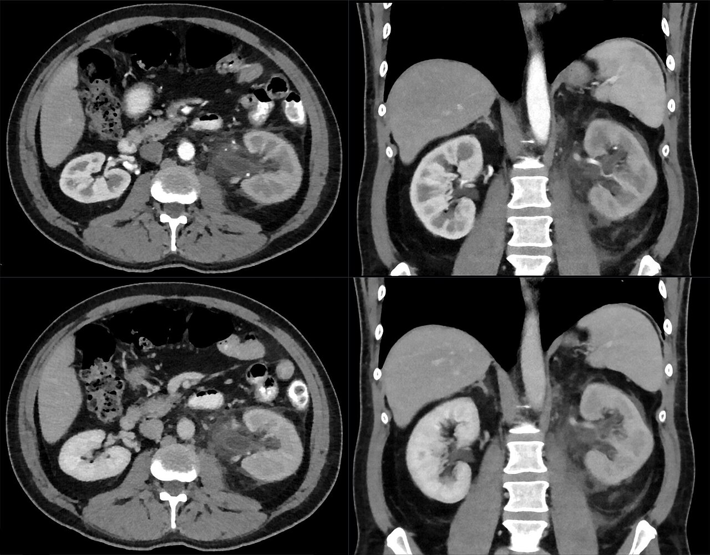

Ficha del catálogo
Pielonefritis aguda
- Sistema
- Urinario
- Modalidad
- TC
- Región
- Riñón y espacio perirrenal
- Dificultad
- Intermedio
La pielonefritis aguda es una infección del parénquima renal y del sistema colector, habitualmente por vía ascendente desde la vejiga. Predomina en mujeres jóvenes y cursa con fiebre, dolor lumbar, puñopercusión positiva y síndrome miccional. El diagnóstico es clínico y de laboratorio, reservándose la imagen para casos complicados, mala evolución o sospecha de absceso.
Técnica
La tomografía con contraste en fase nefrográfica es la técnica más sensible para detectar las alteraciones del realce parenquimatoso. El ultrasonido se usa como primera aproximación para descartar obstrucción y colecciones. La resonancia con difusión es alternativa en embarazadas y en pacientes con contraindicación al contraste yodado.
Qué observar
- Áreas hipocaptantes en cuña de base cortical y vértice hacia el seno renal
- Nefromegalia focal o difusa con pérdida de la diferenciación corticomedular
- Trabeculación de la grasa perirrenal y engrosamiento de la fascia de Gerota
- Engrosamiento de la pared del sistema colector y del uréter
- Colecciones organizadas que sugieran absceso renal o perirrenal
- Presencia de gas intraparenquimatoso indicativo de forma enfisematosa
Hallazgos
En fase nefrográfica se observan bandas o cuñas hipodensas radiadas que alternan con parénquima normal, dando el clásico patrón estriado. El riñón puede estar aumentado de tamaño con borramiento de la unión corticomedular y estriación de la grasa perirrenal. En resonancia las zonas afectadas muestran restricción de la difusión y en ultrasonido pueden verse áreas de ecogenicidad alterada con hipoperfusión en Doppler.
Perlas
El nefrograma estriado es el hallazgo tomográfico más característico y aparece solo en la fase nefrográfica; un estudio realizado únicamente en fase corticomedular o sin contraste puede ser completamente normal pese a una infección extensa. La imagen normal, por tanto, no descarta pielonefritis.
Diagnóstico diferencial
- Infarto renal
- Produce defecto en cuña de bordes netos y ausencia total de realce, con frecuente signo del borde cortical preservado y contexto embólico.
- Absceso renal
- Es una colección redondeada con realce periférico en anillo y centro licuado que no capta contraste.
- Carcinoma renal infiltrativo
- Genera una masa con efecto de masa y realce heterogéneo persistente, sin resolución tras el tratamiento antibiótico.
- Pielonefritis xantogranulomatosa
- Es crónica, se asocia a cálculo coraliforme y muestra cálices dilatados llenos de material inflamatorio con el signo de la pata de oso.
Simuladores
- Infarto renal segmentario
- Contusión renal traumática
- Linfoma renal infiltrativo
Por modalidad
- TC
- Define la extensión del compromiso parenquimatoso, detecta abscesos, gas y complicaciones obstructivas que modifican el tratamiento.
- US
- Descarta hidronefrosis y colecciones de forma rápida junto a la cama del paciente, aunque con sensibilidad limitada para la inflamación parenquimatosa.
Protocolo
Tomografía de abdomen y pelvis con contraste yodado intravenoso adquirida en fase nefrográfica a los 90 a 100 segundos, que es cuando mejor se aprecian los defectos de perfusión. Se añade fase simple si se sospecha litiasis o hemorragia y fase excretora si se buscan fugas urinarias o alteraciones del sistema colector. Cortes de 2 a 3 milímetros con reconstrucciones coronales.
Clasificación
No existe una clasificación de imagen universalmente aceptada; en la práctica se distinguen la pielonefritis aguda no complicada, la forma complicada con absceso o pionefrosis y la pielonefritis enfisematosa, que se subdivide según la extensión del gas al parénquima y a los espacios perirrenales y constituye una urgencia por su elevada mortalidad.
Errores frecuentes
- Descartar la infección porque la tomografía es normal, sin considerar que el diagnóstico es clínico
- Adquirir solo fase corticomedular y no detectar el nefrograma estriado
- Confundir un absceso incipiente con un área de nefritis focal y retrasar el drenaje

pielonefritis nefrograma estriado infección urinaria absceso renal fase nefrográfica grasa perirrenal pionefrosis